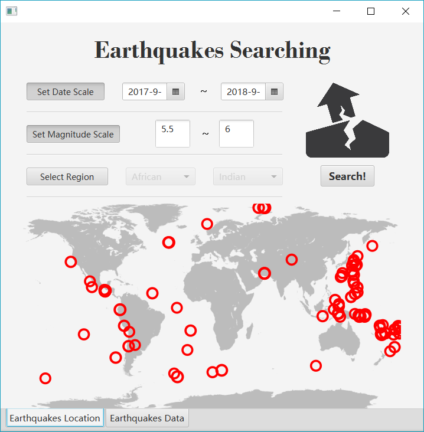
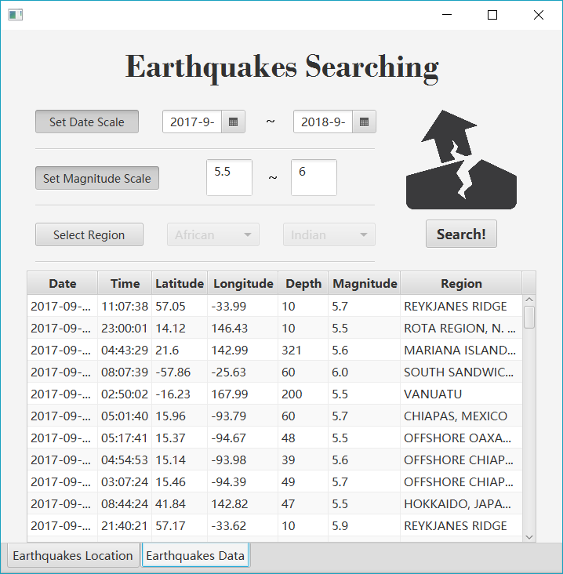

Earthquakes Searching (2017)
This software can grab the earthquakes information happened in recent years.
Download and double click "run.bat" to launch. The Loading process can be very slow, you can just click "OK" to pass.
Made with HuangYuan in 2017.


Download: EarthquakesSearching.zip